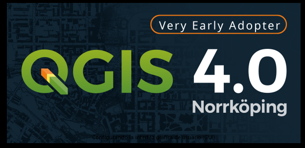
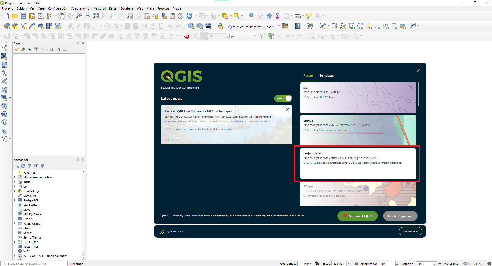

Al abrir QGIS, aparece una pantalla de inicio que muestra la versión del programa.

En este caso, la versión se llama “NorrKöping”, en referencia a la ciudad alemana donde se realizó un encuentro internacional de usuarios y desarrolladores de QGIS.
Cuando se abre QGIS por primera vez, lo más común es iniciar un proyecto nuevo.

Al crear un proyecto en QGIS, aparece la etiqueta EPSG. Este término proviene de European Petroleum Survey Group (Grupo Europeo de Estudios Petrolíferos), una organización que desarrolló un sistema estandarizado para definir sistemas de referencia espacial.
Los códigos EPSG son identificadores numéricos, generalmente de 4 o 5 dígitos, que representan sistemas de coordenadas, proyecciones geográficas y datums utilizados para georreferenciar información en los Sistemas de Información Geográfica (SIG).